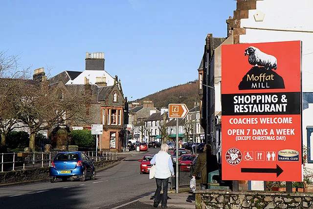
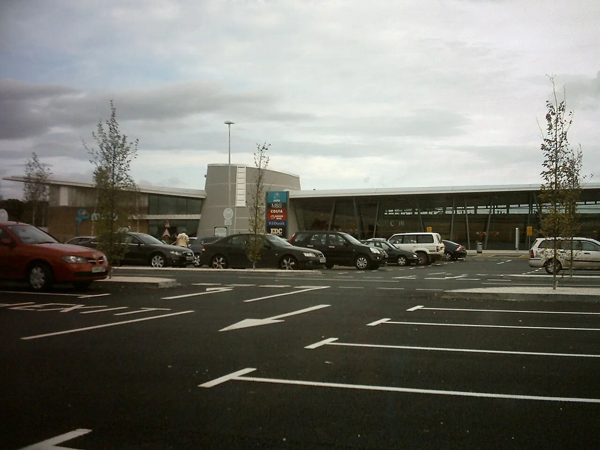
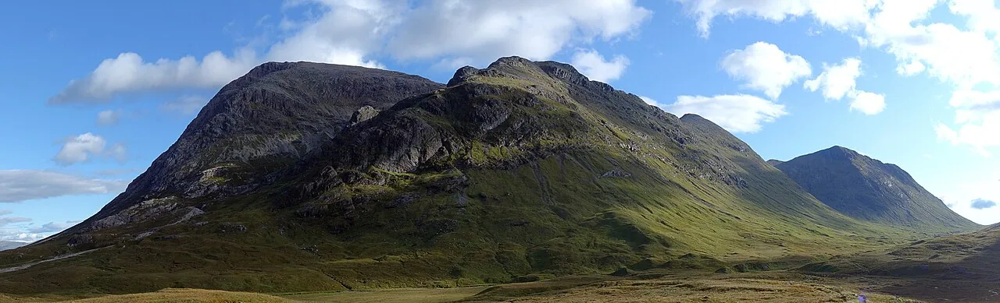

4
days
Wednesday pickup to Saturday morning return
A final road book built around scenic driving, photography, one sensible whisky night, a properly memorable Friday morning and enough rest to get home safely.
Edit the names below. They save on this device. Swap roles at every major stop—before either of you feels tired.
Rental inspection, London exit, first M11/A14/M6 block. Hands over before the long day becomes a test of pride.
Owns route checks, legal parking and photo timing. Becomes the primary driver after the first proper break.
“No trophies for arriving tired. The road is the event.”
Each day has a single purpose. Wednesday gets you into Scotland. Thursday delivers the cinematic Highlands. Friday earns the long route east. Saturday gets you home.

Collect 08:00–08:30, photograph the rental, leave around 09:00. M11 → A14 → M6, Tebay lunch, Devil’s Beef Tub only if energy and daylight still work.
Leave 07:00–07:30. Loch Lomond, Rannoch Moor, Glen Etive, Three Sisters and the B863 round Loch Leven. Kinlochleven is the scenic hotel choice; Fort William remains the practical fallback.
Not the direct route. This version uses Killin, the north shore of Loch Tay, Kenmore, Glen Quaich, Sma’ Glen, Crieff and South Queensferry before the city.

Leave Edinburgh around 18:30–19:00. A720 → A1/A1(M), paid rest at Wetherby for roughly 5–6 hours, then continue only when genuinely alert.
The signature route trades two hours in Edinburgh for roads you will remember: Loch Tay’s open shore, the narrow climb through Glen Quaich and the flow through Sma’ Glen.
Use it when: visibility is reasonable, the minor roads are dry enough, and both drivers feel fresh. Glen Quaich is a narrow single-track road with steep sections and gates—enjoy it slowly, never competitively.
Use it when: Glen Quaich is in low cloud, standing water is visible, the schedule has slipped, or either driver is not fully sharp. It is still scenic and gives you more Edinburgh time.
Decision point: make the call over breakfast in Kinlochleven—not halfway up a wet single-track pass.
One hero frame per location. The Friday drive collapses if every bend becomes a twenty-minute shoot.
Browse or buy in Edinburgh, but both named drivers stay alcohol-free until the rental is returned.
It is west of the city, free, tram-served and open until 02:00. You are leaving the same evening, so its no-overnight rule is not a problem. Use Hermiston if Ingliston is event-full or your timing becomes uncertain.



Tick it here; the page remembers on this device. This is the boring part that protects the fun part.
BMW 3 Series Touring, Volvo V60, Audi A4 Avant or Škoda Superb Estate. Comfortable, narrow-road friendly and more tolerable for the emergency sleep.
Let faster local traffic pass, acknowledge considerate drivers and never stop for a photograph where you block the road.
Pay for the stay, engine off, ventilate slightly and target 5–6 hours stopped. Continue only when genuinely alert.